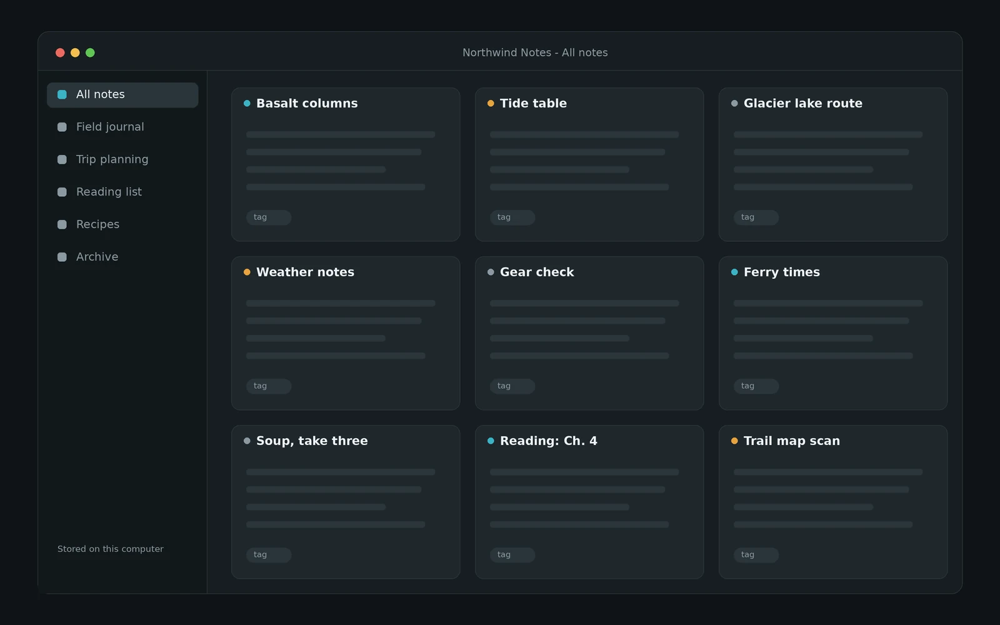
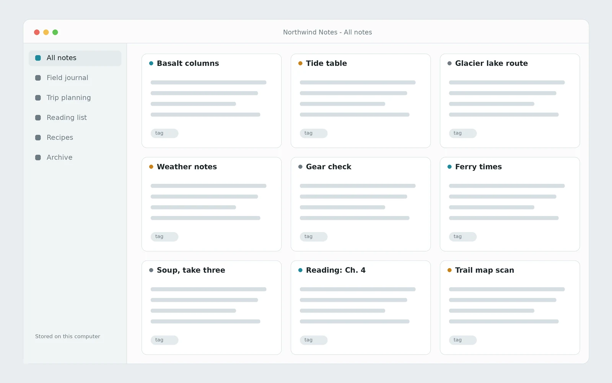
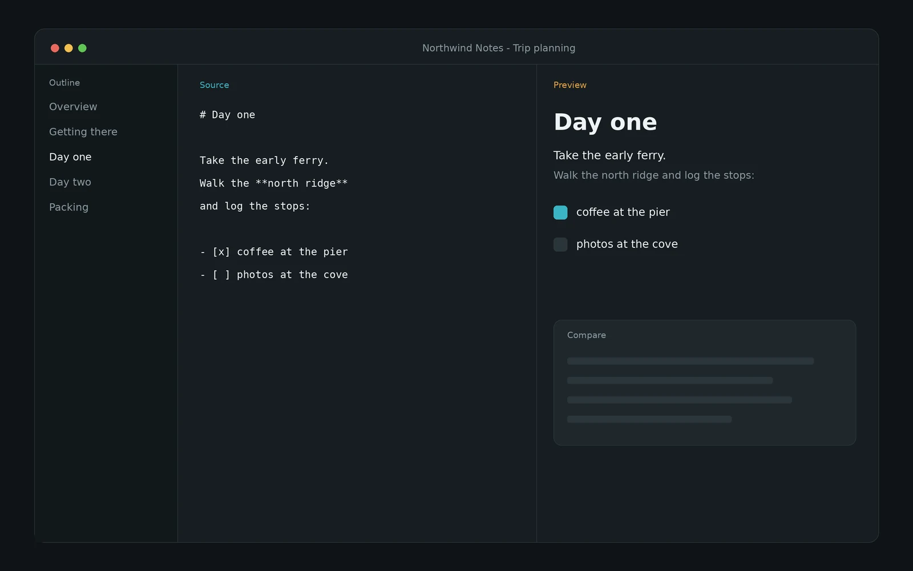
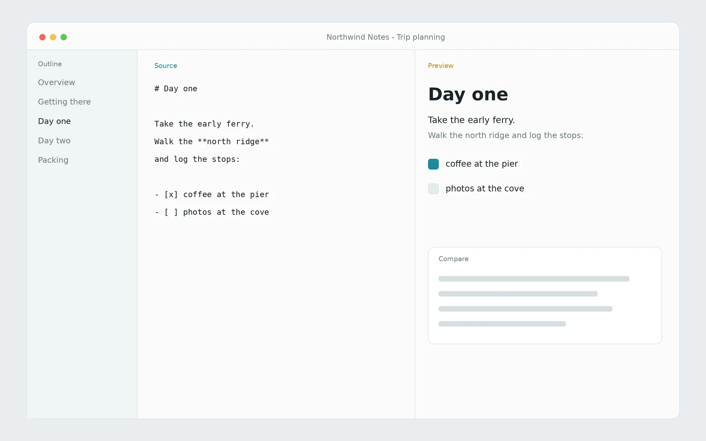
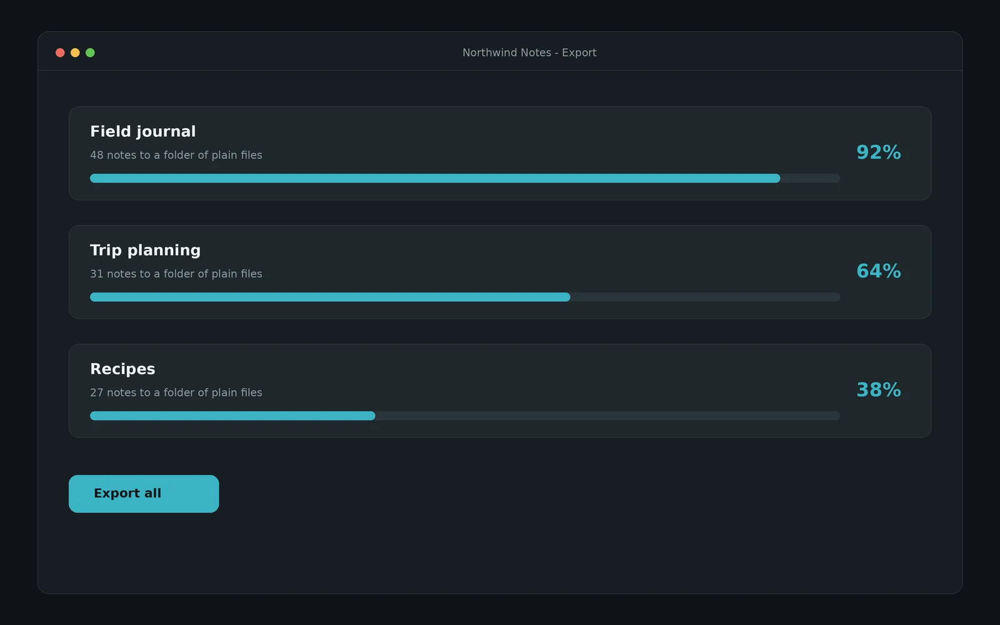
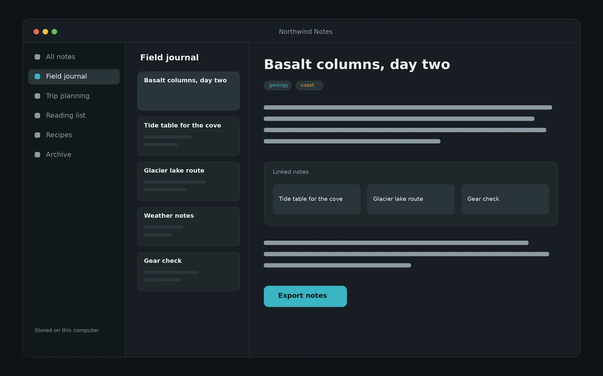
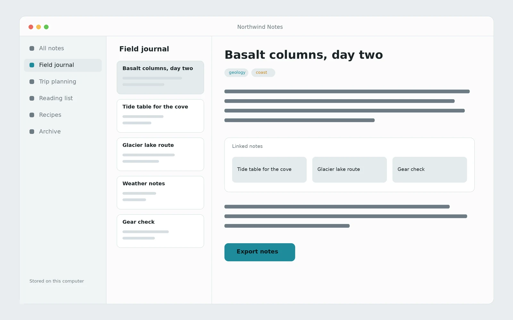

The product
Write, link, take it with you.
Three ideas, and no more: notes are files, links are written in the note, and leaving is a copy.
How it works
How Northwind Notes works
123
Write
Press N and start typing. Each note is saved as you go, as a plain text file in your notebook folder.


- One plain file for each note
- Saved as you type, with undo
- Folders watched for outside edits
Link
Type two square brackets to link to another note. Links show up on both notes, so you can walk the trail either way.


- Links written in double brackets
- Backlinks listed on every note
- Rename a note and its links follow
Export
Press Export to write every note and its links to a folder or one archive. It takes seconds, even for a big notebook.

- A folder of files or one archive
- Links and tags kept intact
- Plain files, readable anywhere


Your notes, your folder.
Nothing to sign up for. Northwind Notes is free while it is a sample, and it is not real, so there is nothing to download.
Back to the start
A sample product for the FormPublisher demo.